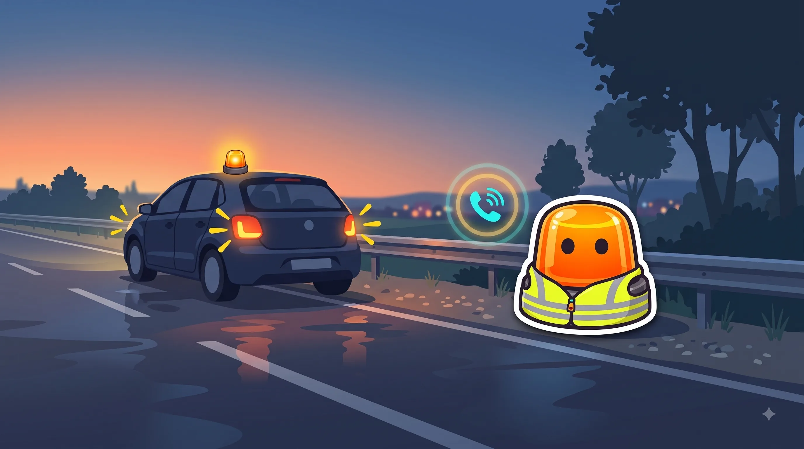
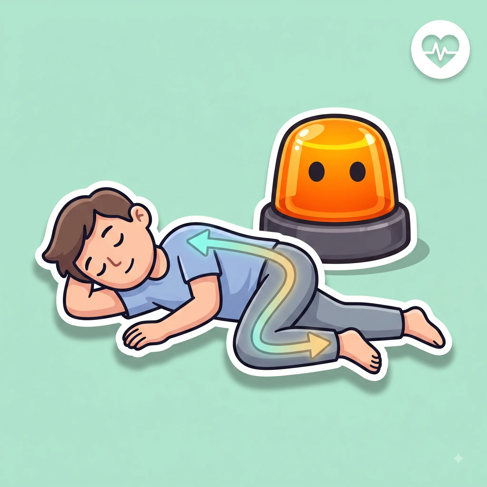

Esto es el repaso. Para aprobar a la primera, hace falta algo más.
Tests oficiales, modo examen cronometrado y tu progreso guardado.

Proteger, avisar y socorrer, en ese orden.
No se mueve, salvo riesgo de incendio o explosión
Se coloca en posición lateral de seguridad
| Norma general | Inconsciente pero respira | |
|---|---|---|
| ¿Se mueve? | No, salvo peligro inminente (fuego, explosión) | Sí, se le coloca en posición lateral de seguridad |
| ¿Por qué? | Moverlo mal puede agravar una lesión, sobre todo en la columna | Evita que se ahogue con vómitos o con la propia lengua |
| ¿Y el casco de un motorista? | No se retira, salvo que le impida respirar | Si hay que quitarlo, entre 2 personas como mínimo |
PAS: Proteger, Avisar, Socorrer. Siempre en ese orden.
Nunca lo inviertas: de nada sirve socorrer si tú mismo te conviertes en la siguiente víctima.
El chaleco, antes de abrir la puerta.
Te lo pones dentro del coche, antes de bajarte, no después de estar ya en la calzada.
Si respira e inconsciente, de lado.
La posición lateral de seguridad evita que se ahogue con sus propios vómitos o con la lengua.

La forma y el color ya te dicen el mensaje antes de leer nada.
A más velocidad, la frenada crece mucho más rápido que la reacción.
Líneas, flechas y símbolos pintados en el asfalto, con su propio código.
Las reglas base que deciden por ti cuando no hay ninguna señal.
Cuándo, cómo y dónde se puede adelantar con seguridad.
Quién pasa primero en cruces y glorietas.
Incorporaciones, carriles y normas específicas de vías rápidas.
Tasas máximas y por qué te la juegas más de lo que crees.
Lo mínimo que debes revisar antes de coger el coche.
Cómo funciona el sistema de puntos y qué te los quita.
Las situaciones que no siguen la norma "de manual".
Tests oficiales, modo examen cronometrado y tu progreso guardado.